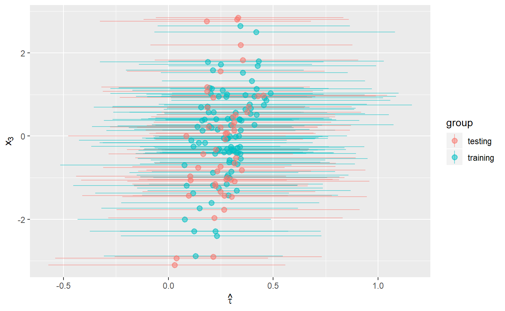

predict-example.RmdIn this vignette, we show how we can use the BCF package to predict estimates for new data off a fitted BCF object.
library(bcf2)
#> Warning: replacing previous import 'Rcpp::LdFlags' by 'RcppParallel::LdFlags'
#> when loading 'bcf2'
#>
#> Attaching package: 'bcf2'
#> The following object is masked from 'package:stats':
#>
#> predict
library(latex2exp)
library(ggplot2)First, we simulate some data for testing. This data set has three covariates \(X\), which we divide into two control variables – that is, two covariates related to the outcome, \(y\) – and one effect moderator – that is, a covariates related to the treatment effect, \(\tau\).
We draw three random \(X\)s for each unit and generate each unit’s expected outcome without treatment, \(\mu_i\), as a function of \(x^{(1)}_i\) and \(x^{(2)}_i\). Each unit’s probability of joining the intervention, \(\pi_i\), is also a function of \(\mu_i\), so that units with larger responses are more likely to participate in the intervention. We then assign units to treatment (\(z_i = 1\)) or comparison (\(z_i = 0\)) as a function of \(\pi_i\).
Then we generate the true treatment effect for each unit, \(\tau_i\). As noted above, \(\tau_i\) is a function of \(x^{(3)}_i\). The observed outcome, \(y_i\), is a function of \(\mu_i\), \(\tau_i\), a random error term \(\sigma\), and weights \(w\) if applicable.
set.seed(1)
## Training data
p <- 3 # two control variables and one effect moderator
n <- 1000
n_burn <- 2000
n_sim <- 1500
x <- matrix(rnorm(n*p), nrow=n)
weights <- abs(rnorm(n))
# create targeted selection, whereby a practice's likelihood of joining the intervention (pi) is related to their expected outcome (mu)
q <- -1*(x[,1]>(x[,2])) + 1*(x[,1]<(x[,2])) -0.1
# generate treatment variable
pi <- pnorm(q)
z <- rbinom(n,1,pi)
# tau is the true treatment effect. It varies across practices as a function of
# X3, the effect moderator
tau <- (1/(1 + exp(-x[,3])))
mu <- q
# generate the response using q, tau and z
y_noiseless <- mu + tau*z
# set the noise level relative to the expected mean function of Y
sigma <- diff(range(mu + tau*pi))/8
# draw the response variable with additive error
y <- y_noiseless + sigma*rnorm(n)/sqrt(weights)
## Testing data
n_test = 50
x_pred <- matrix(rnorm(n_test*p), nrow=n_test)
special_x3 <- c(-3.1, -2.9, 2.76, 2.8, 2.85)
x_pred[ (n_test - length(special_x3) + 1 ):n_test,3] <- special_x3 # including some X3s outside of range
q_pred <- -1*(x_pred[,1]>(x_pred[,2])) + 1*(x_pred[,1]<(x_pred[,2])) - 0.1
pi_pred <- pnorm(q_pred)
z_pred <- rbinom(n_test,1, pi_pred)Let’s compare the results of our training and testing data. We will use \(x_3\) as covariate since we know from the data creation phase that this variable is the strongest effect modifier.
lower <- c(apply(bcf_out$tau, 2, quantile, 0.025), apply(pred_out$tau, 2, quantile, 0.025))
upper <- c(apply(bcf_out$tau, 2, quantile, 0.975), apply(pred_out$tau, 2, quantile, 0.975))
group <- factor(c(rep("training", n), rep("testing", n_test)))
ggplot(NULL, aes(x = c(x[,3], x_pred[,3]),
y = c(colMeans(bcf_out$tau), colMeans(pred_out$tau)),
alpha = group,
color = group)) +
geom_pointrange(aes(ymin = lower, ymax = upper)) +
scale_alpha_discrete(range = c(1.0, 0.3)) +
xlab(TeX("$x_3$")) +
ylab(TeX("$\\hat{\\tau}$")) +
coord_flip()
#> Warning: Using alpha for a discrete variable is not advised.
In this plot, we notice that predictions even for Xs that are outside of the range of our training data are within the expected range, and that they have wider credible intervals, as expected.